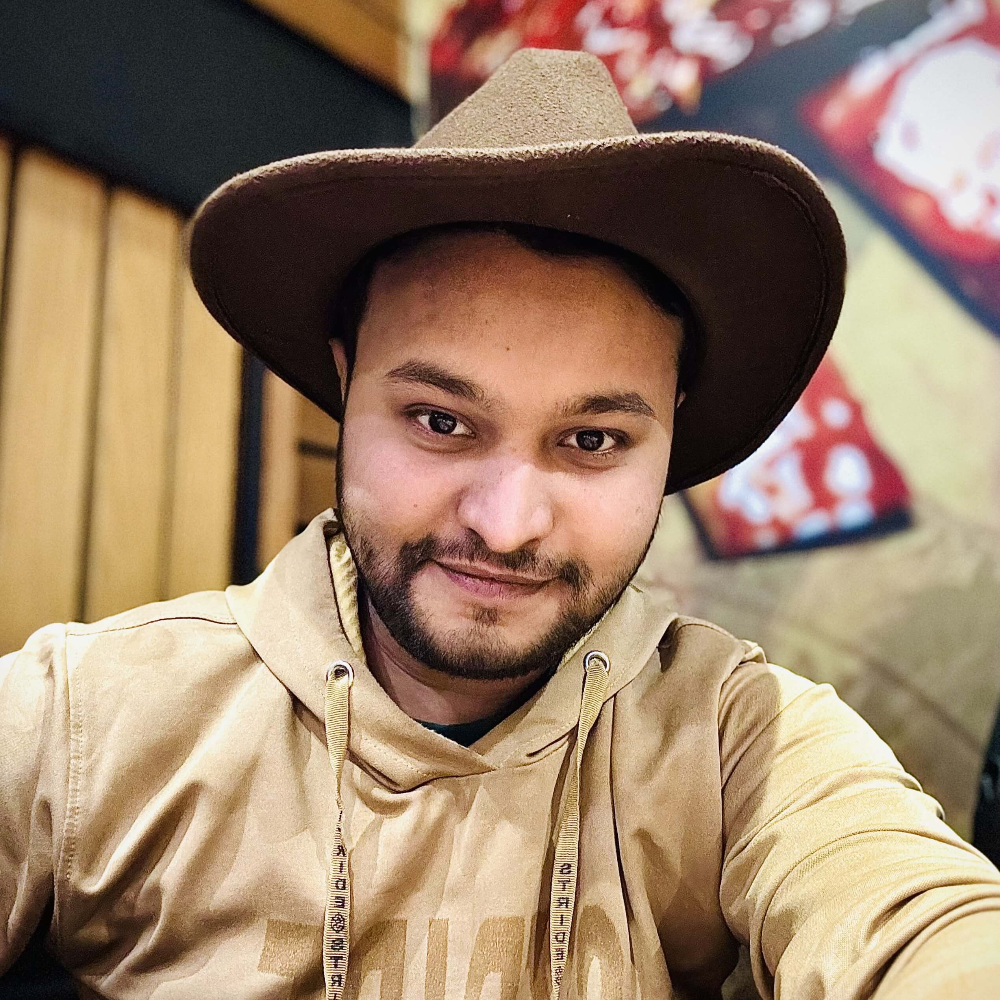

The fundamentals
The languages behind the experience.
Hey, I’m Abid Shahriar. I turn complex problems into thoughtful web experiences. From the first pixel to the last API call.

Bogura, Bangladesh UTC +06:00
I’m a developer who cares as much about how it feels as how it works.
Based in Bogura, Bangladesh, I’ve spent 5+ years building production-grade web applications for teams across the US, Bangladesh, and India. My work connects thoughtful frontends with robust backend systems.
I specialize in TypeScript, React, Next.js, and Node.js—with a focus on clean architecture, performance, and making complicated things feel simple. AI is part of my workflow, with engineering judgment at the center.
Different teams. Different challenges.
The same care for what
gets shipped.
Modernizing an enterprise healthcare platform—making complex clinical workflows faster, clearer, and more reliable.
Built the backend foundations of an enterprise HRM platform, turning dense organizational logic into reliable services.
Helped people tell their stories through a more interactive resume builder and a faster publishing platform.
A connected stack for building,
shipping, and making things
better.
The languages behind the experience.
Responsive, considered interfaces.
Reliable services. Well-structured data.
Confident releases and resilient systems.
Using AI to accelerate delivery, automate testing, and refine code—with human review and quality standards throughout.
Higher Secondary Certificate · Science · Bogura
Secondary School Certificate · Science · Bogura
A project, a role, or a good conversation.
My inbox is open.